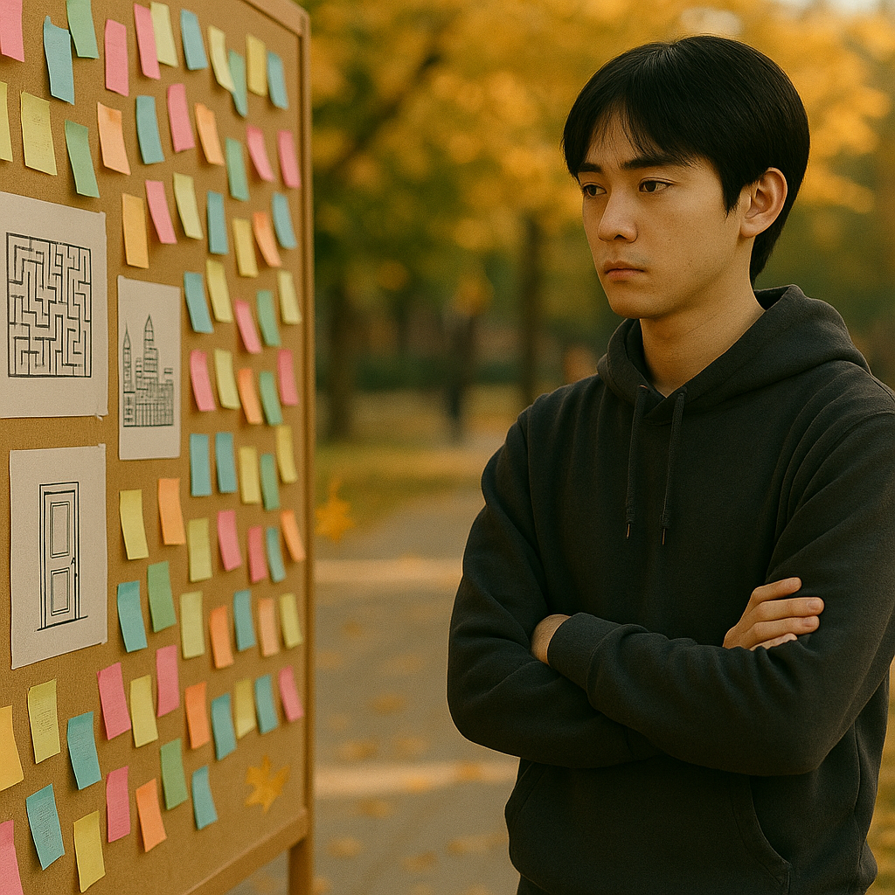

Situation E2 (expanded from Situation 9)
Jun posted his paintings on the message wall and stood at a distance to observe everyone's reactions. He found that no one left a message in response. He began to wonder if his own expressions would also be silently erased.
Jun posted his paintings on the message wall and stood at a distance to observe everyone's reactions. He found that no one left a message in response. He began to wonder if his own expressions would also be silently erased.